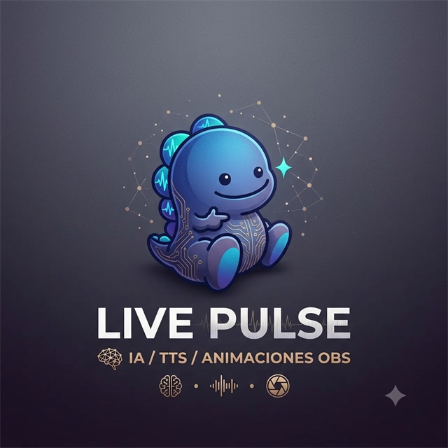

Windows 10 y 11
Windows
Voz, regalos, YouTube desde el chat y animaciones de OBS.
- Windows 10 u 11, 64 bits
- Google Chrome o Microsoft Edge
- OBS Studio solo si usas animaciones

Asistente en vivo para BIGO
Lee el chat en voz alta, agradece los regalos y pone en YouTube la canción que pide la gente. En Windows y en Mac también mueve tus animaciones de OBS.
Versión 2.0.3. Elige tu equipo.
Windows 10 y 11
Voz, regalos, YouTube desde el chat y animaciones de OBS.
macOS
Voz, regalos y YouTube desde el chat. La primera apertura pide un clic derecho.
Android
El mismo asistente en el bolsillo. No hace falta dejar el PC encendido.
El mismo orden: Windows, Mac y Android.
La versión portable no se instala. Al abrirla crea la carpeta LivePulse-Data al lado del archivo. Puedes llevar las dos en un USB.
Sirve en Mac Intel y en Apple Silicon con Rosetta. Para leer el live hace falta Google Chrome. Si no está, también sirve Edge, Brave o Chromium ya instalados. OBS Studio solo si usas animaciones.
No está en Play Store. El APK de esta página es la instalación.
El ID de BIGO queda ligado a tu cuenta durante 30 días. El mismo correo sirve en Windows, en el Mac y en el teléfono. La voz y los sonidos se guardan en cada aparato.
Chat, regalos, música y la cuenta.
Lee los comentarios en orden, con la voz del equipo. Si un emoji trae una letra, la dice. Si hay emojis antes del nombre, los salta y lee el nombre. Si la misma persona escribe seguido, dice su nombre una vez y junta los mensajes.
Usa las voces que ya tienes en el PC o en el teléfono. Una pregunta suena como pregunta y una exclamación como exclamación.
Agradece los regalos del catálogo y también los que todavía no están listados. Los taps no se agradecen. Puede hacer sonar un efecto. Un combo de la misma persona cuenta como uno. También avisa seguidores nuevos y compartidos.
Alguien escribe play y el título en el chat. LivePulse busca la canción, la pone en cola y la reproduce. Al terminar, pasa a la siguiente y no deja YouTube con otro video. El volumen que dejas se conserva. Si escriben playlist, dice lo que sigue. El regalo Sonar ya corta la canción actual y pone la nueva. Al terminar, sigue la cola.
Mientras el asistente habla, puede bajar el volumen de YouTube y de los sonidos de regalos dentro de la app, y después lo devuelve. Tú puedes apagar esa opción.
En Windows y en Mac lanza animaciones en OBS cuando llega un regalo, un seguidor o un compartido. El teléfono no necesita OBS.
La APK no depende del PC. Entra al live desde el celular y puede seguir con la pantalla apagada si dejas la batería sin restricciones.
10 días gratis al registrarte. En Perú el precio es de 16 soles, por Mercado Pago. En otros países son 6 dólares, por PayPal o Binance. El mismo correo entra en el PC, en el Mac y en el celular. El ID de BIGO queda ligado a esa cuenta durante 30 días.
La app revisa sola si hay una más nueva y te muestra el cartel para instalarla. El número de la versión queda abajo a la izquierda.